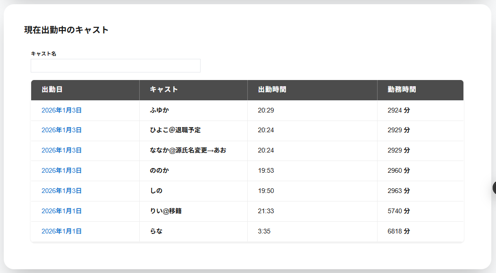

未完了スケジュールの現在出勤中のキャストには現在出勤中のキャストの以下の項目が一覧で表示されます。
・キャスト名検索
入力した文字が含まれるキャストの出勤に絞り込めます。
・出勤日
出勤開始時の年月日が表示されます。
・キャスト
対象の出勤のキャスト名が表示されます。
・出勤時刻
出勤を開始した時刻が表示されます。
・勤務時刻
出勤してから経過した時刻が表示されます。
対象のキャストの列をクリックすると勤務詳細が表示されます。
※現在出勤中のキャストがいない場合は現在出勤中のキャストは表示されません。
